Ahrara
Retenção zero. Simples. Gratuito. Código aberto.
E-mail descartável focado em agentes de IA, QA e automações
Receba códigos de verificação, links e anexos em segundos. Use pelo seu agente de IA, nos seus testes ou no terminal.
O quê, como e por que usar o Ahrara
- O que é o Ahrara?
- Endereços de e-mail descartáveis com a caixa de entrada no seu computador. Leia as mensagens no terminal ou no navegador, ou automatize com o MCP, a API local e os SDKs.
- Como funciona?
- O Ahrara gera os endereços localmente. Enquanto ele está em execução, o relay transmite os e-mails recebidos por uma conexão criptografada até a caixa de entrada no seu computador.
- Por que usar o Ahrara?
- Teste cadastros, códigos de verificação e templates de e-mail com endereços dedicados. Mantenha os e-mails de teste fora da sua caixa pessoal e deixe as verificações repetitivas com o seu agente.
Como usar
Leia seus e-mails no navegador ou no terminal, entregue-os ao seu agente de IA ou valide-os nos seus testes.
No navegador
Sem instalar nada: abra o app web, crie seu endereço e leia seus e-mails ali mesmo. Sua caixa de entrada fica no seu navegador.
Abrir o app webMantenha a aba aberta para receber e-mails. O que a versão do navegador suporta.
Caixa de entrada 2
CLI
Instale o Ahrara e execute ahrara no terminal. Seu endereço de e-mail é criado automaticamente.
Mantenha o Ahrara em execução para receber e-mails.
ahrara- Status
- [+] Connected
- nIvUcbwtK1bCU7Ivf6iXR1WFXe9NL8Pl@ahrara.dev (+3 more)
- Web
- http://127.0.0.1:8787
- MCP
- http://127.0.0.1:8787/mcp
| Selecionado | Received (local) | From | Subject | Size |
|---|---|---|---|---|
| E-mail selecionado | GitHub <noreply@github.com> | Your verification code: 482916 | 1.0 KiB | |
| Linear <notifications@linear.app> | You're invited to the workspace | 1.4 KiB |
Agentes de IA
O próprio agente gerencia o Ahrara.
Plugins, regras e MCP para 25 agentes de programação.
/plugin marketplace add Hitmasu/Ahrara
/plugin install ahrara@ahraraExecute dentro do Claude Code e recarregue os plugins. O plugin requer Node.js 20+.
Usa outro agente? Veja a instalação de agentes para todos os hosts compatíveis.
- Endereço descartável criadoAguardando e-mails pelo Ahrara MCP.
- Conta criada no seu appFormulário de cadastro enviado com o endereço Ahrara.
- E-mail verificadoConta confirmada com o código
482916do e-mail de verificação. - Templates de e-mail validadosAssuntos, texto simples e HTML conferidos nos e-mails de verificação e de boas-vindas.
E2E aprovado. Conta verificada e templates de e-mail conforme o esperado.
SDKs
Dê a cada teste sua própria caixa de entrada. Use o endereço dela em qualquer fluxo que envie e-mail, aguarde a mensagem e extraia um código, um link ou um anexo. Cada caixa se conecta diretamente ao relay, sem precisar da CLI em execução.
Os pacotes incluem a biblioteca nativa. Validado em Linux x64.
npm install @ahrara/sdkNode.js 20+.
Veja o guia do SDK para filtros, links, anexos e reutilização da caixa de entrada.
import { Ahrara } from '@ahrara/sdk';
const inbox = await Ahrara.createInbox();
try {
// A aplicação solicita um e-mail de verificação para inbox.address neste ponto.
const match = await inbox.waitForRegexMatch('[0-9]{6}', {
timeoutMs: 30_000,
filter: { subject: 'Verification' },
});
// O código extraído fica disponível para a aplicação.
const code = match.value;
} finally {
await inbox.close();
}from ahrara import create_inbox
with create_inbox() as inbox:
# A aplicação solicita um e-mail de verificação para inbox.address neste ponto.
match = inbox.wait_for_regex_match(
r"[0-9]{6}", timeout=30, filter={"subject": "Verification"},
)
code = match["value"]
# O código extraído fica disponível para a aplicação.using System;
using System.IO;
using AhraraSdk;
await using var inbox = await Ahrara.CreateInboxAsync();
// A aplicação solicita um e-mail de verificação para inbox.Address neste ponto.
var match = await inbox.WaitForRegexMatchAsync(
@"[0-9]{6}", timeout: TimeSpan.FromSeconds(30),
filter: new EmailFilter { Subject = "Verification" });
var code = match.Value;
// O código extraído fica disponível para a aplicação.
import dev.ahrara.Ahrara;
import dev.ahrara.EmailFilter;
import java.time.Duration;
class Example {
public static void main(String[] args) throws Exception {
try (var inbox = Ahrara.createInbox()) {
// A aplicação solicita um e-mail de verificação para inbox.address() neste ponto.
var match = inbox.waitForRegexMatch(
"[0-9]{6}", Duration.ofSeconds(30),
EmailFilter.builder().subject("Verification").build());
var code = match.value();
// O código extraído fica disponível para a aplicação.
}
}
}package main
import (
"context"
"time"
ahrara "github.com/Hitmasu/Ahrara/src/sdks/go"
)
func receive(ctx context.Context) error {
inbox, err := ahrara.CreateInbox(ctx, ahrara.Options{})
if err != nil { return err }
defer inbox.Close()
// A aplicação solicita um e-mail de verificação para inbox.Address neste ponto.
wait, cancel := context.WithTimeout(ctx, 30*time.Second)
defer cancel()
match, err := inbox.WaitForRegexMatch(wait, `[0-9]{6}`,
ahrara.RegexOptions{Filter: ahrara.Filter{Subject: "Verification"}})
if err != nil { return err }
_ = match.Value // O código extraído fica disponível para a aplicação.
return nil
}
func main() {
if err := receive(context.Background()); err != nil { panic(err) }
}use ahrara_core::{Inbox, InboxOptions, WaitOptions};
#[tokio::main]
async fn main() -> anyhow::Result<()> {
let inbox = Inbox::create(InboxOptions::default()).await?;
let result = async {
// A aplicação solicita um e-mail de verificação para inbox.address() neste ponto.
let options = WaitOptions {
timeout_ms: Some(30_000),
subject: Some("Verification".into()),
..Default::default()
};
let matched = inbox.wait_for_regex_match("[0-9]{6}", options).await?
.ok_or_else(|| anyhow::anyhow!("Email timed out"))?;
let _code = matched.value;
// O código extraído fica disponível para a aplicação.
Ok::<(), anyhow::Error>(())
}.await;
inbox.close().await;
result
}import ahrara from 'k6/x/ahrara';
export default function () {
const inbox = ahrara.createInbox({});
try {
// A aplicação solicita um e-mail de verificação para inbox.address neste ponto.
const match = inbox.waitForRegexMatch('[0-9]{6}', {
durationMs: 30_000,
filter: { subject: 'Verification' },
});
// O código extraído fica disponível para a aplicação.
const code = match.value;
} finally {
inbox.close();
}
}Frameworks de teste
Crie a caixa de entrada no setup do teste, use o endereço dela no fluxo testado e feche-a no teardown.
Use o SDK no framework que você já utiliza.
npm install @ahrara/sdkGerencie a caixa de entrada em uma fixture de teste do Node.
As mesmas APIs funcionam com xUnit, NUnit, MSTest, pytest e JUnit, e com Selenium pelo SDK Java.
import { test, expect } from '@playwright/test';
import { Ahrara } from '@ahrara/sdk';
test.use({ baseURL: 'https://app.example.com' });
test('receives the email', async ({ page }) => {
const inbox = await Ahrara.createInbox();
try {
await page.goto('/signup');
await page.getByLabel('Email', { exact: true }).fill(inbox.address);
await page.getByRole('button', { name: 'Sign up', exact: true }).click();
const match = await inbox.waitForRegexMatch('[0-9]{6}', {
timeoutMs: 30_000,
filter: { subject: 'Verification' },
});
await page.getByLabel('Verification code').fill(match.value);
await page.getByRole('button', { name: 'Verify', exact: true }).click();
await expect(page.getByText('Verified', { exact: true })).toBeVisible();
} finally {
await inbox.close();
}
});describe('Email flow', () => {
let address;
afterEach(() => {
if (address) {
const current = address;
address = undefined;
cy.task('closeInbox', current);
}
});
it('receives the email', () => {
cy.task('createInbox', {}).then(value => {
address = value;
cy.visit('/signup');
cy.get('[name="email"]').type(address);
cy.contains('button', 'Sign up').click();
cy.task('waitForRegexMatch', {
address, pattern: '[0-9]{6}', subject: 'Verification',
}, { timeout: 35_000 }).then(result => {
cy.get('[name="code"]').type(result.value);
cy.contains('button', 'Verify').click();
cy.contains('Verified').should('be.visible');
});
});
});
});*** Settings ***
Library ahrara.robot.AhraraLibrary WITH NAME Ahrara
Library SeleniumLibrary
Test Teardown Run Keywords Ahrara.Close Inbox AND Close All Browsers
*** Test Cases ***
Receive Email
${address}= Ahrara.Create Inbox
Open Browser https://app.example.com/signup chrome
Input Text name:email ${address}
Click Button Sign up
${filter}= Create Dictionary subject=Verification
${match}= Ahrara.Wait For Regex Match [0-9]{6} timeout=30 filter=${filter}
Input Text name:code ${match}[value]
Click Button Verify
Wait Until Page Contains VerifiedRetenção zero de dados
O servidor do Ahrara não salva e-mails nem registros de endereços. O design sem estado mantém a entrega simples, sem caixa de entrada no servidor para manter.
Seus e-mails são seus
Seus endereços são gerados localmente e vinculados à sua identidade criptográfica. Sua chave privada fica no seu computador e comprova que os endereços são seus quando você se conecta.

Seus e-mails e endereços ficam salvos apenas no seu computador.
100% gratuito
Todos os recursos do Ahrara são gratuitos. Sem necessidade de criar conta. Código aberto.
Doações são bem-vindas e totalmente opcionais.
Perguntas frequentes
O Ahrara armazena meus e-mails ou endereços nos servidores dele?
Não. As mensagens passam pelo servidor sem serem salvas, e os endereços de e-mail não são registrados nele. Sua caixa de entrada e seus endereços ficam armazenados localmente no seu computador.
Posso enviar e-mails com o Ahrara?
Não. O Ahrara apenas recebe e-mails. Ele não envia nem responde mensagens.
O Ahrara é um open relay de e-mail?
Não. Remetentes podem entregar e-mails sem login, mas o Ahrara nunca os retransmite para servidores de e-mail externos. As mensagens vão apenas para o cliente Ahrara autenticado do endereço de destino.
Posso usar meu próprio domínio?
Sim. Configure o encaminhamento do seu domínio para um endereço Ahrara e adicione o domínio no Ahrara. Os novos endereços usarão seu domínio em vez de ahrara.dev. Veja o guia de domínio personalizado para as instruções de configuração.